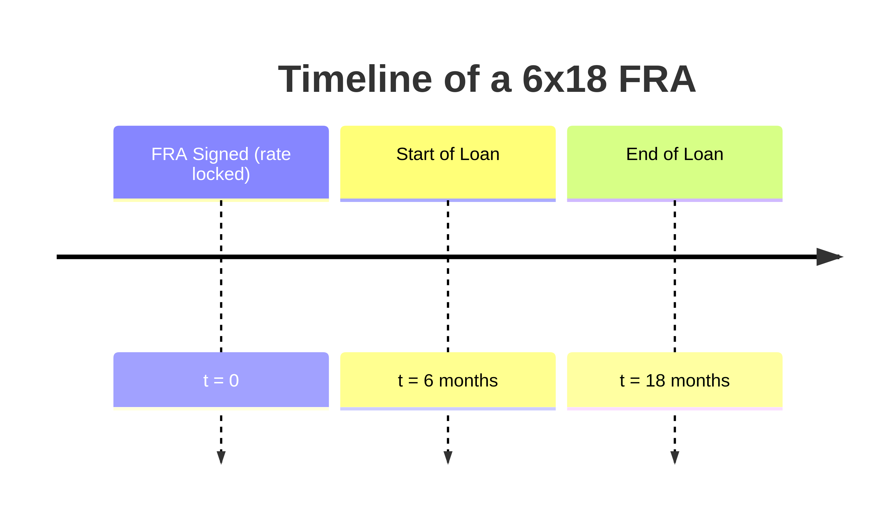

3 Forwards and Futures Strategies
References:
- Pirie, W. L., and M. P. Kritzman. 2017. Derivatives. CFA Institute Investment Series.
- Chapter 7 - Risk Management Applications of Forward and Futures Strategies
- HULL, John. Options, futures, and other derivatives. Ninth edition. Harlow: Pearson, 2018. ISBN 978-1-292-21289-0.
- Chapter 6 - Interest Rate Futures
Learning outcomes:
- Demonstrate how to use equity futures to achieve a target portfolio beta and calculate the required number of contracts.
- Create a synthetic stock index fund using cash and stock index futures.
- Convert a long stock position into synthetic cash with stock index futures.
- Rebalance a portfolio between equity and debt using equity and bond futures.
- Use futures to shift portfolio allocations across equity sectors.
- Define exchange rate risk and show how forward contracts mitigate risk for future foreign currency transactions.
3.1 Introduction
Definition
- Forward and futures contracts are agreements where one party commits to buy, and the other to sell, an underlying asset at a predetermined price on a specified future date.
- Forward contracts are customized between parties, while futures contracts are standardized, traded on exchanges, and regulated by federal authorities.
This material explores scenarios where these contracts are used in risk management. Businesses often hedge to mitigate various risks, using market positions to protect against adverse price movements. Here, we emphasize a broader view of risk management beyond simple hedging.
For further review, see the topics from the Financial Derivatives course on Forwards and Futures and the Determination of Forward and Futures Prices.
3.2 Managing Interest Rate Risk
Definition
Interest rate risk is the potential for financial loss due to fluctuations in interest rates. It can affect both the value of financial assets and the cost of liabilities.
- Financial institutions are particularly vulnerable to interest rate risk, as changes in rates can directly impact their profitability, net income, and balance sheet stability due to their reliance on lending and borrowing activities.
- This risk also affects non-financial companies, especially when planning long-term borrowing or managing fixed-rate loans, as unexpected changes in interest rates can lead to higher costs or cash flow disruptions.
- Effective management of interest rate risk is essential to maintaining financial health. To mitigate this risk, institutions and corporations often use forward rate agreements (FRAs) and interest rate futures, allowing them to hedge against unfavorable interest rate movements.
While both interest rate futures and FRAs serve as tools for managing interest rate risk, FRAs offer greater flexibility due to their customizable nature. Since financial institutions often require bespoke solutions to match their unique interest rate exposures, FRAs are more commonly used in practice than standardized futures contracts. Therefore, the following text will focus on FRAs as the preferred tool for managing interest rate risk.
3.2.1 Interest Rate Futures
Definition
Interest rate futures are standardized contracts traded on exchanges that allow market participants to buy or sell a notional amount of a debt instrument or interest rate index at a specified future date and price.
These contracts are typically used to hedge against short-term interest rate fluctuations. Since they are exchange-traded, they offer high liquidity and are subject to daily mark-to-market adjustments, meaning gains and losses are settled at the end of each trading day, which can lead to margin calls.
Examples of commonly traded interest rate futures include futures on government bonds (e.g., U.S. Treasury bonds) or short-term interest rates (e.g., Eurodollar futures). They are often used by institutional investors, banks, and corporations to protect themselves from unexpected changes in interest rates that can affect the cost of borrowing or the value of their bond portfolios.
Duration-based hedging is similar to managing beta in equity portfolios, but instead of using beta, we use duration to manage interest rate risk. Duration measures the sensitivity of a bond’s price to changes in interest rates, much like beta measures a stock’s sensitivity to market movements. We’ll explore the concept of managing beta in more detail when we discuss market risk in a later section.
Duration matching is a risk management technique used by financial institutions, pension funds, and insurance companies to protect against interest rate risk. The idea is to match the duration of assets with the duration of liabilities so that changes in interest rates have an equal but offsetting effect on both. This minimizes the institution’s exposure to fluctuations in interest rates.
Interest rate futures are more complex than simple buy/sell agreements, and understanding their specifics is crucial for effective risk management.
Price Quotations
Interest rate futures, like Eurodollar futures, are often quoted as 100 minus the interest rate. For example, if the quoted price is 98.50, it implies a 1.5% interest rate (100 - 98.50 = 1.50%). This inverted quotation system can be confusing but is designed to reflect rising interest rates causing a fall in futures prices and vice versa. Understanding these price quotations is key to analyzing market trends and deciding on hedge positions.
Day Count Conventions
Interest rate futures follow specific day count conventions to calculate interest and contract values. For example, Eurodollar futures use an actual/360 convention, meaning the interest is based on the actual number of days in the contract period, divided by 360. U.S. Treasury futures use a 30/360 convention, assuming each month has 30 days and the year has 360 days. These conventions affect the pricing and calculation of settlement values.
Conversion Factors
For bond futures, conversion factors are used to adjust the price of various bonds so they can be compared to the futures contract. The conversion factor represents the price at which a bond with a 6% coupon would be delivered. Bonds with different coupons or maturities are adjusted through this conversion factor to account for discrepancies, ensuring that different bonds are appropriately valued for delivery. This mechanism allows flexibility in delivery but can complicate the pricing and hedging process.
Cheapest-to-Deliver Bonds
In futures contracts involving bonds, such as U.S. Treasury futures, the seller can deliver any bond that meets the contract’s maturity criteria. However, sellers will choose the bond with the lowest cost of delivery, known as the “cheapest to deliver.” The selection of this bond impacts the actual delivery value and creates opportunities for arbitrage. Understanding how to calculate the cheapest-to-deliver bond is essential for participants hedging fixed-income portfolios.
Delivery Options in Treasury Bond Futures
In Treasury bond futures, the short position holder has key delivery options:
- Can deliver on any day during the delivery month.
- Can choose from several eligible bonds, including the cheapest-to-deliver.
- Can notify intention to deliver based on the 2:00 p.m. settlement price but decide later in the day.
These options add flexibility for the short position and generally reduce the futures price.
3.2.2 Forward Rate Agreements
Definition
A Forward Rate Agreement (FRA) is an over-the-counter (OTC) derivative contract between two parties to exchange interest payments based on a notional principal amount at a specified future date.
The buyer of the FRA agrees to pay a fixed interest rate, while the seller agrees to pay a floating rate (usually based on LIBOR or another reference rate). The actual notional principal is never exchanged; instead, the parties settle based on the difference between the agreed-upon rate and the prevailing market rate. FRAs are used to hedge interest rate exposure. Borrowers can lock in future borrowing rates by buying a FRA, protecting against rising rates, while lenders can short a FRA to lock in future lending rates, guarding against falling rates.
In a 6x18 FRA, a company locks in the interest rate for a loan that begins 6 months from now and lasts for one year. If market rates rise by then, the borrower pays the agreed lower rate; if they fall, the borrower pays the difference.
Banks use FRAs to hedge the risk of rising interest rates on floating-rate loans. Some prefer options instead, limiting losses to the option premium if the loan isn’t needed.
The fair price for a FRA that prevents arbitrage is called forward rate. Forward rates are the rates implied by current zero rates for future periods. Zero rates (or spot rates) are the interest rates on zero-coupon bonds, which pay no interim interest but a single payment at maturity.
Forward rates are calculated using the difference between zero rates for different maturities. They represent the interest rate for a future period that makes the total return over multiple periods consistent with the zero rates.
\[ R_F = \frac{R_2T_2 - R_1T_1}{T_2 - T_1} \]
- \(R_F\) is forward rate.
- \(R_1\) and \(R_2\) are zero rates for maturities \(T_1\) and \(T_2\), respectively.
- \(T_1\) and \(T_2\) are maturities in years.
Example
| Maturity (Years) | Zero Rates (%) | Forward Rates (%) |
|---|---|---|
| 0.25 | 3.00 | N/A |
| 0.50 | 3.20 | 3.40 |
| 0.75 | 3.40 | 3.80 |
| 1.00 | 3.50 | 3.80 |
The forward rate for the period between 0.5 and 0.75 years is calculated as:
\[ R_F = \frac{3.40 \times 0.75 - 3.20 \times 0.50}{0.75 - 0.5} = 3.8 \]
This means the implied forward rate between 6 months and 9 months is 3.8%, based on the zero rates for those periods.
Single-Payment Loan
XYZ Corporation plans to borrow $10 million in six months for a year to finance business expansion and is concerned about rising interest rates. To hedge this risk, they enter into a 6x18 FRA with a bank at a fixed rate of 5.5%.
Two possible outcomes:
- If interest rates rise to 7%, XYZ Corporation borrows at 7%, but the bank compensates them for the difference, effectively reducing the borrowing cost and making the hedge beneficial.
- If interest rates fall to 4%, XYZ pays the bank the difference, resulting in an additional cost, meaning the hedge wasn’t favorable.
By locking in a rate with the FRA, XYZ Corporation limits its exposure to rising rates, securing certainty at the cost of potentially missing lower interest rates.
\[ \text{FRA Payoff} = \text{Notional Principal} \times \frac{ (\text{Rate at Maturity} - \text{FRA Rate}) \times \frac{\text{Days}}{360}}{1 + \text{Rate at Maturity} \times \frac{\text{Days}}{360}} \]
- Notional Principal is $10,000,000 (the loan amount).
- Rate at Maturity is the actual market interest rate when the FRA matures.
- FRA Rate is the agreed rate in the FRA (5.5%).
- Days is the number of days the FRA is active (360 days in this case).
If the rate at maturity is 7%:
\[ \text{FRA Payoff} = \$10,000,000 \times \frac{(0.07 - 0.055) \times \frac{360}{360}}{1 + 0.07 \times \frac{360}{360}} = \$140,187 \]
\[ \text{Pay back} = (\$10,000,000 - \$140,187) \times (1 + 0.07 \times \frac{360}{360}) = \$10,550,000 \]
\[ \text{Effective rate} = \left(\frac{\$10,550,000}{\$10,000,000} - 1 \right) \times \frac{360}{360} \approx 5.5\% \]
This shows that even though the market rate rose to 7%, the FRA has effectively hedged XYZ Corporation’s borrowing costs to approximately 5.5%.
3.3 Managing Equity Market Risk
Definition
Equity market risk refers to the potential financial loss or variability in returns resulting from fluctuations in the prices of equity securities, such as stocks.
Stock market volatility is generally higher than bond market volatility, although the stock market tends to be more liquid. Futures contracts are often used to manage the risks associated with stock market volatility, with these contracts typically tied to stock market indices rather than individual stocks. Diversified investors, managing risk at the portfolio level, tend to favor futures on broad-based indices.
3.3.1 Measuring and Managing the Risk of Equities
Definition
Beta (\(\beta\)) measures a stock’s or portfolio’s volatility relative to the market, indicating how returns respond to market swings.
It’s a key component of the Capital Asset Pricing Model (CAPM), which estimates expected returns based on beta and market returns. The formula for beta is:
\[ \beta_{i} = \frac {Cov(R_{i}, R_{m})} {Var(R_{m})} \]
Where \(\beta_{i}\) is the beta of the stock or portfolio, \(Cov(R_{i}, R_{m})\) is the covariance between the returns of the stock/portfolio and the market, and \(Var(R_{m})\) is the variance of market returns.
A beta of 1 means the security moves with the market; less than 1 indicates lower volatility than the market, and greater than 1 suggests higher volatility.
To adjust portfolio beta using futures contracts, the number of contracts (\(N\)) is calculated as:
\[ N = \frac{(\text{Target Beta} - \text{Current Beta}) \times \text{Portfolio Value}}{\text{Futures Price} \times \text{Futures Beta}} \]
Key elements:
- Target Beta: Desired beta post-hedging.
- Current Beta: Portfolio’s initial beta.
- Portfolio Value: Value of the portfolio.
- Futures Price: Price of one futures contract.
- Futures Beta: Beta of the futures contract.
A positive result indicates buying futures (long position); a negative result means selling futures (short position). This calculation assumes the futures contract and portfolio are closely correlated.
Example
Here’s a refined version:
- Current Portfolio Beta: 1.2
- Target Beta: 0.8
- Portfolio Value: $1,000,000
- Futures Price: $50,000
- Futures Beta: 0.95
The number of futures contracts needed is:
\[ N = \frac{(0.8 - 1.2) \times \$1,000,000}{\$50,000 \times 0.95} \approx -8 \]
We need to short 8 futures contracts to reduce the portfolio beta to the target of 0.8. The negative value indicates shorting futures to decrease market risk.
When the market rises by 3.7%, the portfolio increases by 4.4%, and the futures price increases by 3.45%. The overall value of the position and the effective beta are:
\[ \text{Portfolio value} = \$1,000,000 \times 1.044 = \$1,044,000 \]
\[ \text{Futures value} = -8 \times (\$50,000 \times 1.0345 - \$50,000) = -\$13,800 \]
\[ \text{Total return} = \frac{\$1,044,000 + (-\$13,800)}{\$1,000,000} - 1 = 0.0302 \]
\[ \text{Effective beta} = \frac{0.0302}{0.037} = 0.816 \]
The effective beta of 0.816 is very close to the target of 0.8.
3.4 Synthetic Positions
Definition
A synthetic position refers to a financial strategy that replicates the risk and return profile of an asset or portfolio using a combination of other financial instruments, usually involving derivatives, instead of directly holding the asset.
These positions are “constructed” by combining different market positions, allowing investors to mimic the behavior of a desired asset class without actually owning it. Synthetic positions can be used to manage risk, reduce transaction costs, or increase flexibility in investment strategies, providing exposure to various market movements in a cost-efficient or strategically beneficial manner.
Common synthetic positions are as follows:
\[ \text{Long Stock} = \text{Long Risk-Free Bond} + \text{Long Futures} \]
\[ \text{Short Futures} = \text{Long Stock} - \text{Long Risk-Free Bond} \]
\[ \text{Long Risk-Free Bond} = \text{Long Stock} + \text{Short Futures} \]
These combinations allow investors to create synthetic positions, altering exposure between equities and risk-free returns, depending on their market outlook or risk preferences.
3.4.1 Creating Equity out of Cash
Stock index futures can be used to create synthetic equity positions, reducing transaction costs and preserving liquidity. By combining risk-free bonds and futures, cash can be “equitized,” effectively converting it into an equity position. This strategy is ideal for funds seeking equity exposure but needing to maintain liquidity or meet regulatory constraints, allowing for equity market participation without significant liquidation risk.
\[ \text{Long Stock} = \text{Long Risk-Free Bond} + \text{Long Futures} \]
This synthetic index fund is created by combining risk-free bonds with futures on a desired index. The number of futures contracts required (\(N\)) is calculated using:
\[ N = \frac{V(1 + r)^t}{q \times f} \]
- \(V \dots\) amount to be invested
- \(f \dots\) futures price
- \(t \dots\) time to futures expiration
- \(r \dots\) risk-free rate
- \(q \dots\) contract multiplier
- \(\delta \dots\) dividend yield on the index.
Example
On January 1st, an investment firm wants to construct a synthetic index fund with $200 million invested in the S&P 500. The index’s dividend yield is 1.5%, and a futures contract on the S&P 500 is priced at $3,000 with a $50 multiplier. The position will be held for three months, and the US risk-free rate is 2%, compounded annually.
The number of futures contracts needed is:
\[ N = \frac{\$200,000,000 \times (1.02)^{0.25}}{\$50 \times 3,000} = 1,339.95 \]
Rounding up, the firm buys 1,340 contracts. The effective investment is:
\[ \frac{1,340 \times 50 \times 3,000}{1.02^{0.25}} = \$200,007,377 \]
The money is invested in risk-free bonds, growing to $201,000,000 after three months. The number of stock units effectively purchased at the start is:
\[ \frac{1,340 \times 50}{(1.015)^{0.25}} = 66,751.08 \]
With dividends reinvested, the number of shares grows to:
\[ 66,751.08 \times (1.015)^{0.25} = 69,574.35 \]
At expiration, the futures payoff is:
\[ \text{Futures payoff} = 1,340 \times 50 \times (S_T - 3,000) = 69,574.35 \times S_T - 201,000,000 \]
This reflects the effective equity exposure created through the synthetic index fund.
3.4.2 Creating Cash out of Equity
Converting a long stock position into synthetic cash involves selling futures. This approach minimizes transaction costs and avoids the need to sell a large volume of stocks at once. The relationship can be expressed as:
\[ \text{Long Risk-Free Bond} = \text{Long Stock} + \text{Short Futures} \]
This strategy is similar to creating a synthetic index fund, with two key differences: a negative sign at the start because futures are being sold, and \(V\) represents the market value of the stock investment.
\[ N = - \frac{V(1 + r)^t}{q \times f} \]
This method is equivalent to setting \(\beta\) to zero. In this scenario, the stock portfolio must mirror the index (with the same \(\beta\)) for a full hedge. The formula for managing \(\beta\) is a more general approach to eliminating systematic risk in any portfolio, though the number of futures contracts required to transform stocks into a risk-free asset may differ.
It’s important to note that eliminating systematic risk does not mean the portfolio is entirely risk-free; diversifiable risk can still remain. Both the \(\beta\) reduction and full hedging formulas align when applied to a portfolio identical to the index on which the futures are based. Derivatives provide a cost-effective and flexible means for adjusting \(\beta\), particularly for temporary adjustments.
3.4.3 Adjusting Allocation among Asset Classes
Consider a portfolio worth $300 million, with 80% allocated to stocks ($240 million) and 20% to bonds ($60 million). If the goal is to shift the allocation to 50% stocks ($150 million) and 50% bonds ($150 million), we need to reduce the stock allocation by $90 million and increase the bond allocation by the same amount.
To achieve this, we sell stock index futures contracts to neutralize the beta on $90 million of stock, effectively converting it to cash. Simultaneously, bond futures contracts are purchased to increase the portfolio’s duration, aligning it with the new desired bond exposure.
3.4.4 Pre-Investing in an Asset Class
Pre-investing with futures contracts allows investors to gain exposure to an asset class before having the available cash. This strategy essentially involves borrowing against future cash inflows and investing in the underlying asset via futures. By taking long positions in futures with the appropriate beta and duration, investors can closely replicate the performance of a direct investment.
The relationship is represented by:
\[ \text{Long Stock} = \text{Long Futures} + \text{Long Risk-Free Bond} \]
Alternatively adding a loan to both sides gives:
\[ \text{Long Stock} + \text{Short Risk-Free Bond} = \text{Long Futures} \]
Here, \(\text{Short Risk-Free Bond}\) represents a loan. When the anticipated cash is received, the futures position is closed, and the cash is invested, which effectively repays the loan. However, this speculative strategy carries risks if the market underperforms and fails to cover the borrowing costs.
3.5 Managing Foreign Currency Risk
Definition
Foreign currency risk, also known as exchange rate risk, is the potential for financial loss due to fluctuations in the exchange rates between different currencies.
Companies engaged in international business are exposed to exchange rate risks, which can affect financial planning, income targets, and balance sheets.
- Transaction exposure arises when future cash flows must be converted from foreign to domestic currency.
- Translation exposure occurs when foreign subsidiaries’ financial statements are consolidated into the parent company’s domestic currency.
- Economic exposure reflects the impact of exchange rate changes on a company’s overall competitiveness, even for businesses not directly involved in foreign trade, such as when a strong domestic currency reduces tourism.
Managing these risks requires tailored approaches: forward contracts are typically used to mitigate transaction exposure, accounting strategies handle translation exposure, and demand forecasting addresses economic exposure. Forward contracts are particularly useful for managing specific cash flow conversions from one currency to another, as futures contracts may be too standardized for such purposes.
3.5.1 Managing the Risk of a Foreign Currency Receipt/Payment
When a company expects to receive cash flows in a foreign currency, it is considered “long” on that currency. If the domestic currency appreciates while awaiting the cash flow, the company will receive fewer domestic currency units for the same amount of foreign currency. To hedge this risk, the company can sell the foreign currency in the forward market, effectively going “short” on a currency forward contract. Hedging a foreign currency cash outflow follows a similar process but in reverse.
3.5.2 Managing the Risk of a Foreign-Market Asset Portfolio
Foreign currency risk is a key factor when investing in foreign markets. Simultaneously hedging foreign market risk and currency risk is challenging, and estimating the future portfolio value helps determine hedging strategies. It is generally difficult to hedge currency risk while keeping the local equity market exposure intact. Companies may choose to hedge local market returns or leave both market and currency risks unhedged.
If only the foreign market returns are hedged, the gain equals the foreign risk-free rate. If both market returns and exchange rates are hedged, the gain equals the domestic risk-free rate. Neither strategy is optimal for long-term investments, but in the short run, this approach can be beneficial for investors who are already in foreign markets and want to adopt a more defensive position without liquidating the portfolio.
3.6 Final Comments
Betas and durations are inherently unstable and difficult to measure, complicating the accurate assessment of risk sensitivities in stocks and bonds. Derivatives should not be criticized for failing to deliver precise hedging outcomes or for their speculative applications, as they play a crucial role in hedging strategies.
Futures and forwards typically incur significantly lower transaction costs compared to stock indices, which is a key reason for their continued relevance as risk management tools. They are less disruptive to portfolio managers and can be effectively used to alter a portfolio’s risk profile or asset allocation.
Although futures and forwards require less capital to trade, they are not immune to liquidity concerns, especially for contracts with longer expirations. Organizational policies on the use of futures, forwards, and options often hinge on leverage and credit-risk factors. Unlike options, which require an upfront investment and provide non-linear payoffs, futures and forward contracts have zero initial value and offer linear payoffs.
3.7 Practice Questions and Problems
An investment management firm wishes to increase the beta for one of its portfolios under management from 0.95 to 1.20 for a three-month period. The portfolio has a market value of $175,000,000. The investment firm plans to use a futures contract priced at $105,790 in order to adjust the portfolio beta. The futures contract has a beta of 0.98.
- A. Calculate the number of futures contracts that should be bought or sold to achieve an increase in the portfolio beta.
- B. At the end of three months, the overall equity market is up 5.5%. The stock portfolio under management is up 5.1%. The futures contract is priced at $111,500. Calculate the value of the overall position and the effective beta of the portfolio.
Consider an asset manager who wishes to create a fund with exposure to the Russell 2000 stock index. The initial amount to be invested is $300,000,000. The fund will be constructed using the Russell 2000 Index futures contract, priced at 498.30 with a $500 multiplier. The contract expires in three months. The underlying index has a dividend yield of 0.75%, and the risk-free rate is 2.35% per year.
- A. Indicate how the money manager would go about constructing this synthetic index using futures.
- B. Assume that at expiration, the Russell 2000 is at 594.65. Show how the synthetic position produces the same result as investment in the actual stock index.
An investment management firm has a client who would like to temporarily reduce her exposure to equities by converting a $25 million equity position to cash for a period of four months. The client would like this reduction to take place without liquidating her equity position. The investment management firm plans to create a synthetic cash position using an equity futures contract. This futures contract is priced at 1170.10, has a multiplier of $250, and expires in four months. The dividend yield on the underlying index is 1.25%, and the risk-free rate is 2.75%.
- A. Calculate the number of futures contracts required to create synthetic cash.
- B. Determine the effective amount of money committed to this risk-free transaction and the effective number of units of the stock index that are converted to cash.
- C. Assume that the stock index is at 1031 when the futures contract expires. Show how this strategy is equivalent to investing in the risk-free asset, cash.
Consider a portfolio with a 65% allocation to stocks and 35% to bonds. The portfolio has a market value of $200 million. The beta of the stock position is 1.15, and the modified duration of the bond position is 6.75. The portfolio manager wishes to increase the stock allocation to 85% and reduce the bond allocation to 15% for a period of six months. In addition to altering asset allocations, the manager would also like to increase the beta on the stock position to 1.20 and increase the modified duration of the bonds to 8.25. A stock index futures contract that expires in six months is priced at $157,500 and has a beta of 0.95. A bond futures contract that expires in six months is priced at $109,000 and has an implied modified duration of 5.25. The stock futures contract has a multiplier of one.
- A. Show how the portfolio manager can achieve her goals by using stock index and bond futures. Indicate the number of contracts and whether the manager should go long or short.
- B. After six months, the stock portfolio is up 5% and bonds are up 1.35%. The stock futures price is $164,005 and the bond futures price is $110,145. Compare the market value of the portfolio in which the allocation is adjusted using futures to the market value of the portfolio in which the allocation is adjusted by directly trading stocks and bonds.
A pension fund manager expects to receive a cash inflow of $50,000,000 in three months and wants to use futures contracts to take a $17,500,000 synthetic position in stocks and $32,500,000 in bonds today. The stock would have a beta of 1.15 and the bonds a modified duration of 7.65. A stock index futures contract with a beta of 0.93 is priced at $175,210. A bond futures contract with a modified duration of 5.65 is priced at $95,750.
- A. Calculate the number of stock and bond futures contracts the fund manager would have to trade in order to synthetically take the desired position in stocks and bonds today. Indicate whether the futures positions are long or short.
- B. When the futures contracts expire in three months, stocks have declined by 5.4% and bonds have declined by 3.06%. Stock index futures are priced at $167,559, and bond futures are priced at $93,586. Show that profits on the futures positions are essentially the same as the change in the value of stocks and bonds during the three-month period.
Consider a US company, GateCorp, that exports products to the United Kingdom. GateCorp has just closed a sale worth 200,000,000 GBP. The amount will be received in two months. Because it will be paid in pounds, the us company bears the exchange risk. In order to hedge this risk, GateCorp intends to use a forward contract that is priced at $1.4272 per pound. Indicate how the company would go about constructing the hedge. Explain what happens when the forward contract expires in two months.
ABCorp is a US-based company that frequently imports raw materials from Australia. It has just entered into a contract to purchase 175,000,000 AUD worth of raw wool, to be paid in one month. ABCorp fears that the australian dollar will strengthen, thereby raising the US dollar cost. A forward contract is available and is priced at $0.5249 per australian dollar. Indicate how ABCorp would go about constructing a hedge. Explain what happens when the forward contract expires in one month.